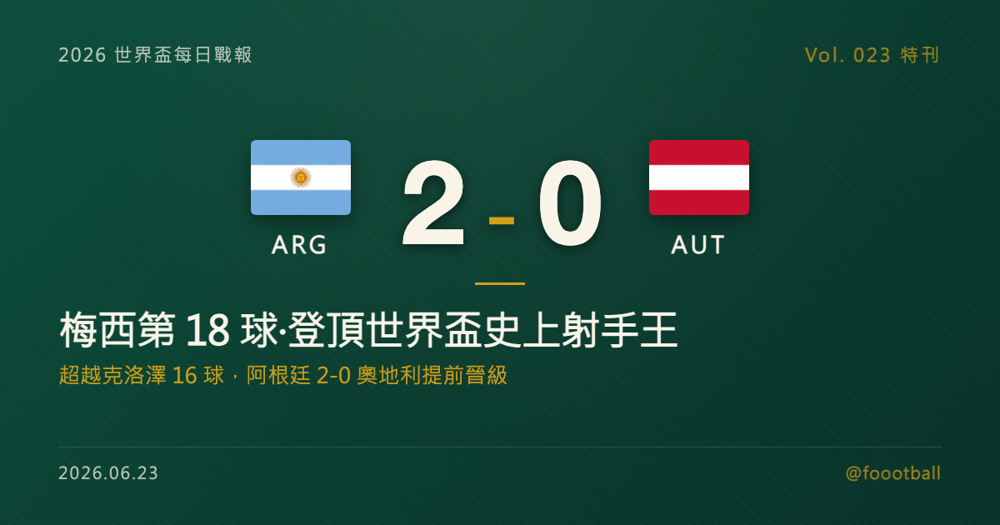

梅西第 18 球：超越克洛澤，登頂世界盃史上頭號射手
2026 世界盃 J 組次輪，阿根廷在阿靈頓 2-0 完勝奧地利。梅西第 38 分鐘攻入世界盃生涯第 17 球，超越克洛澤的 16 球、登上男足世界盃史上頭號射手；補時再進一球，把紀錄推上 18 球。這位再過兩天就滿 39 歲、第六度征戰世界盃的衛冕冠軍隊長，用一種近乎不講道理的穩定，改寫了一項曾被認為難以撼動的紀錄。這篇特刊把第 18 球的來龍去脈、梅西的世界盃進球軌跡與這項紀錄的歷史座標，逐項講清楚。

2026 世界盃特刊｜Vol. 023 番外
有些紀錄，是用一場比賽寫成的；有些紀錄，是用一整個職業生涯堆起來的。
2026 年 6 月，在美國阿靈頓的 AT&T 球場，阿根廷 2-0 完勝奧地利。比分本身並不驚人，但這一夜之所以會被寫進世界盃的史冊，是因為一個名字——梅西（Lionel Messi）。他在這場比賽梅開二度，把自己的世界盃生涯進球推上了 18 球，正式超越德國名宿克洛澤（Miroslav Klose）保持的 16 球，成為男足世界盃史上頭號射手。對一位再過兩天就要迎來 39 歲生日、第六度站上世界盃舞台的球員而言，這不只是一個進球數字，而是一個時代的標記。
這一夜值得慢慢拆——先拆這顆破紀錄進球的經過，再拆它的歷史座標，接著回顧梅西橫跨二十年的世界盃進球軌跡，最後，聊聊阿根廷衛冕之路的下一步。
一、破紀錄的一夜：梅西對奧地利的梅開二度
阿根廷這場勝利的主軸，從第 38 分鐘那一刻就已經定調。
第 38 分鐘，第一球——梅西的第 17 顆世界盃進球，登頂史上射手王。 上半場過了大半，阿根廷的進攻終於兌現：梅西在禁區附近捕捉到機會、完成終結，皮球入網，1-0。這顆球的意義非比尋常——它是梅西世界盃生涯的第 17 顆進球，正式超越了克洛澤保持多年的 16 球紀錄。從這一刻起，男足世界盃史上進球最多的球員，換成了梅西的名字。
補時階段，第二球——把紀錄推上 18 球。 比賽進入尾聲，梅西又一次出現在正確的位置上，補時階段再下一城，把個人世界盃生涯進球推上 18 球，也把這項全新的紀錄，一口氣拉開到「兩球領先」的安全距離。對手奧地利全場努力，卻始終擋不住這位老將的嗅覺，最終 0-2 落敗。
兩顆進球，一頭一尾，把一場原本可能平淡的小組賽，變成了一個被全世界記住的歷史夜晚。阿根廷也憑這場勝利兩戰全勝、提前晉級淘汰賽。
值得玩味的是這顆破紀錄進球出現的時機。它不是在一場大勝中的錦上添花，而是在一場 0-0 僵持、對手以密集防守頑強周旋的比賽裡，由全隊最關鍵的那個人親自打破。對奧地利這樣的對手而言，整場比賽的目標就是「不讓梅西做出決定性的一擊」——但他們最終還是沒能擋住。這正是頂級球星與一般球員的差別：在最被針對、最難進球的場合，依然交得出貨。
二、第 18 球的歷史座標：超越克洛澤，也超越瑪塔
把鏡頭拉遠，會發現這顆球的份量，遠遠超出阿根廷這一場勝負。
在梅西之前，男足世界盃史上的頭號射手，是德國的克洛澤——他在 2002 至 2014 年間、四屆世界盃累積 16 球，並隨德國在 2014 年捧盃。這個 16 球的數字，長年被視為一道難以撼動的高牆：它需要的不只是頂級的終結能力，更需要一名球員在漫長的職業生涯中，一屆又一屆地站上世界盃舞台、並且持續進球。
而如今，這道牆被推倒了。梅西的第 17 球超越克洛澤、登頂男足世界盃紀錄，同時追平了女足世界盃紀錄保持者瑪塔（Marta）的 17 球；補時的第 18 球，更連瑪塔也一併超越。換句話說，若只比較 FIFA 男足與女足世界盃決賽圈的個人進球紀錄，梅西的 18 球已同時高於男足（克洛澤 16 球）與女足（瑪塔 17 球）原本的最高紀錄。對任何一項體育紀錄而言，能同時站上 FIFA 男足與女足世界盃決賽圈的個人進球之巔，都是極為罕見的成就。
更難得的是「連續性」。據賽事數據統計，梅西已連續 6 場世界盃比賽都有進球——這意味著他的破紀錄並非靠某一屆的爆發，而是長期維持在頂尖水準的結果。
為什麼 16 球這道牆能站這麼久？因為世界盃的賽制天生不利於累積個人進球：四年才一屆、一屆最多七場，且球隊還得先擠進決賽圈。多少頂級射手窮盡整個職業生涯，世界盃進球也停留在個位數；能突破雙位數的，本就屈指可數。克洛澤的 16 球，是用四屆世界盃、橫跨十二年堆出來的，這個門檻長年被視為「可望而不可及」。梅西能把它推倒，靠的不是某一場的神勇，而是六屆賽事、二十年如一日的穩定輸出——這種跨越世代的持久，比任何單場表現都更難複製。
三、橫跨二十年六屆世界盃：梅西的進球軌跡
要真正讀懂這 18 球，得把時間軸拉回二十年前。
梅西的世界盃進球，橫跨 2006 到 2026 整整二十年、六屆賽事，每一顆都對應著他職業生涯的一個切面：
- 2006 年（德國）：初登世界盃舞台的梅西攻入 1 球，當時的他還只是個 18 歲、被寄予厚望的新星。
- 2010 年（南非）：顆粒無收，那是他與世界盃之間一段略顯苦澀的記憶。
- 2014 年（巴西）：梅西攻入 4 球、帶領阿根廷一路殺進決賽，最終屈居亞軍，個人雖獲金球獎卻留下遺憾。
- 2018 年（俄羅斯）：1 球，阿根廷止步十六強。
- 2022 年（卡達）：生涯最輝煌的一屆，梅西獨進 7 球、率領阿根廷捧起睽違已久的大力神盃，補上了職業生涯最後一塊拼圖。
- 2026 年（美加墨）：截至目前 5 球——首戰對阿爾及利亞上演帽子戲法、追平克洛澤，次戰對奧地利梅開二度、正式登頂。
從青澀到圓滿、從遺憾到登頂，這 18 球串起來，幾乎就是一部濃縮的梅西世界盃編年史。它記錄的不只是進球，更是一位球員如何在二十年間，把「天才」熬成「傳奇」。
特別值得一提的是這條曲線的「後段加速」。多數球員的世界盃進球會集中在生涯黃金期（約 25 到 30 歲之間），此後隨著體能下滑而遞減；梅西卻反其道而行——他生涯進球最多的一屆是 35 歲的 2022 年（7 球），而真正改寫紀錄，是在再過兩天就滿 39 歲的 2026 年。這種「越老越關鍵」的軌跡，在足球史上極為罕見，也讓這 18 球的故事多了一層難以言喻的厚度。
四、39 歲的傳奇：為什麼這個紀錄難以複製
把視野再拉高一點，會發現這項紀錄真正驚人的地方，在於它幾乎無法被複製。
要打破世界盃進球紀錄，一名球員必須同時滿足幾個近乎苛刻的條件：頂級的終結能力、橫跨多屆賽事的長壽與穩定、以及球隊本身要能一屆屆穩定打進世界盃決賽圈。世界盃四年一度，一名球員的黃金期通常只夠他參加三到四屆；能參加六屆、且每一屆都保持競爭力的，本就鳳毛麟角。梅西不僅做到了，還在再過兩天就滿 39 歲的「高齡」，仍以衛冕冠軍隊長的身分站上場、並且持續進球。
這也是為什麼，這顆破紀錄進球的情緒重量，遠超過一般的里程碑。它不是某個當打之年球星的順理成章，而是一位本應步入生涯暮年的傳奇，用近乎不講道理的自律與穩定，把一道高牆一塊塊拆掉。對阿根廷球迷而言，能在 2022 年的捧盃之後，再見證隊長改寫世界盃的個人歷史，無疑是一份額外的禮物。
五、阿根廷的衛冕之路：小組形勢與下一步
回到賽場本身，這場勝利對阿根廷的意義同樣實在。
作為 2022 年的世界盃冠軍，阿根廷帶著衛冕的使命來到美加墨。兩輪戰罷，球隊交出兩戰全勝、6 分、淨勝球 +5 的成績單，獨自領跑 J 組、提前鎖定淘汰賽門票——首戰 3-0 完勝阿爾及利亞（梅西帽子戲法），次戰 2-0 力克奧地利（梅西梅開二度），攻防兩端都展現了衛冕冠軍應有的穩定。
J 組的形勢。 阿根廷確定晉級之後，小組第二的爭奪仍懸而未決：奧地利與阿爾及利亞同積 3 分，末輪正面對決，這場「第二名生死戰」的勝者極可能搶下另一張淘汰賽門票；約旦則兩戰皆墨，已被外電判定出局。對阿根廷而言，末輪對約旦的比賽更像是一次調整與輪換的機會——既能讓主力適度休息，也能繼續磨合狀態，為強度陡升的淘汰賽蓄力。
更深一層看，這支阿根廷的底氣，並不只來自梅西一人。2022 年捧盃的那批球員，多數仍是這支球隊的中軸；既有大賽奪冠的經驗、也有面對逆境的韌性。對衛冕冠軍而言，小組賽兩戰全勝、提前出線、又讓隊長改寫個人歷史，幾乎是最理想的開局——它讓全隊在心理與體能上都取得了主動，也讓梅西能在淘汰賽前，以最從容的姿態調整狀態。真正的硬仗還沒到，但阿根廷已經把該打好的基礎，穩穩地打好了。
六、接下來：衛冕之路才剛開始
紀錄已經寫下，但對阿根廷與梅西而言，真正的考驗還在後頭。
世界盃的小組賽，從來只是序章；衛冕冠軍真正要回答的問題，要等到淘汰賽才會浮現——單場定生死的賽制裡，沒有任何巨星能單憑一己之力走到最後。對阿根廷來說，提前晉級的最大好處，是可以從容地安排末輪、讓核心球員保留體能；而對 39 歲的梅西而言，如何在漫長賽程中分配狀態、在最關鍵的淘汰賽階段挺身而出，將是比進球紀錄更難的課題。
但至少在這個夜晚，一切都顯得剛剛好：一位橫跨二十年、六屆世界盃的傳奇，在自己第六次的世界盃征途上，把男足世界盃史上頭號射手的名字，正式改寫成了自己的名字。而這趟衛冕之路，才剛剛開始。
常見問題
Q：梅西現在世界盃總共進了幾球？ A：18 球。他在對奧地利的比賽梅開二度，第 38 分鐘的進球是生涯第 17 顆、超越克洛澤的 16 球登頂男足世界盃紀錄並追平瑪塔的 17 球，補時的第 18 顆則連瑪塔也一併超越。這些進球來自 2006、2014、2018、2022、2026 五屆世界盃；他也參加了 2010 年世界盃，但該屆未進球。
Q：他超越了誰的紀錄？ A：男足方面，他超越了德國名宿克洛澤（Miroslav Klose）保持的 16 球，成為男足世界盃史上頭號射手；他的 18 球也超越了女足世界盃紀錄保持者瑪塔（Marta，17 球）。
Q：阿根廷晉級了嗎？接下來對誰？ A：晉級了。阿根廷兩戰全勝、以 6 分與淨勝球 +5 領跑 J 組，已提前鎖定淘汰賽門票。末輪（美加墨 6/27）對上小組墊底的約旦；同組的奧地利與阿爾及利亞則將正面對決，爭奪小組第二。
Tags: 世界盃, 2026世界盃, 梅西, 阿根廷, 克洛澤, 世界盃射手紀錄